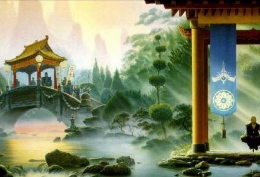
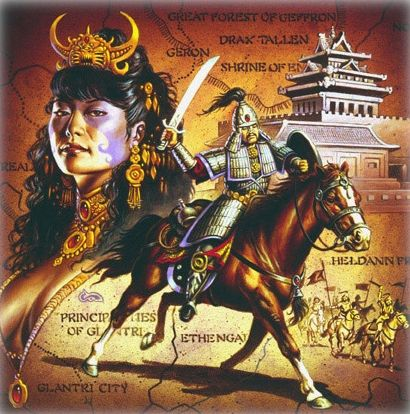

Kara-Tur
Au-delà des Terres de la Horde se trouve un pays mystique et magique connu sous le nom de Kara-Tur. Cette région est très différente de Faerûn, et son existence passait autrefois pour une vague légende. Mais suite à l'arrivée de la Horde et à la vague de réfugiés que celle-ci leva devant elle, davantage d'histoires, de faits et de rumeurs se propagèrent. Les plus extravagantes de ces histoires, celles qui parlent de mortels traversant les murs sans faire appel à la magie, de dragons crachant de la fumée ou de guerriers aux mystérieux pouvoirs, sont facilement démenties ou expliquées. Mais il n'en reste pas moins que Kara-Tur ne ressemble en rien à Faerûn.
Kara-Tur est connu pour ses deux grandes nations, Shou Lung et Kozakura. Shou Lung, dirigé par un sage empereur que conseillent les esprits de ses prédécesseurs, est probablement le plus puissant empire au monde. Il éclipse même le Mulhorande au temps de sa gloire. Kozakura est principalement connu comme l'île des guerriers, là où le devoir et l'honneur sont les deux seules raisons de vivre des samouraïs. Les récits sur Kara-Tur parlent d'une terre merveilleuse où l'on trouve en abondance soie, épices et or. Elle serait gouvernée par des milliers de seigneurs de guerre aussi cruels qu'hautins. Les voyageurs parlent pourtant avec respect de l'empire shou, un royaume immense protégé par une imposante muraille, où les toits des temples sont en or. L'empereur pourrait compter sur des millions d'épées à ce que l'on dit.
De la même manière que Faerûn est divisé en plusieurs régions géographiques, Kara-Tur peut être divisé en neuf zones distinctes, représentant chacune une nation ou un groupe de nations. En voici un aperçu.
Shou Lung
Histoire
{kind=link}
Kara-Tur
2445 x 2625
D'après la légende, le Céleste envoya un jour sur terre 9 émissaires pour enseigner aux hommes le « chemin de la Vérité », afin que la vie sur terre soit semblable à la vie dans les cieux. Ces émissaires, connus aussi comme les 9 immortels, représentaient les 9 vertus cardinales du Chemin (éducation, respect des traditions, honneur, compassion, amour, fidélité, karma, art et courage) et furent les premiers empereurs de Shou Lung. Ils pouvaient prendre à leur guise l'aspect d'humains puissants et de grande beauté, ou bien celle de dragons soutenant le monde. Shou Lung signifie d'ailleurs « receveur du Dragon ». Mais dans toute chose coexistent le Yin et le Yang, et malgré l'ère de l'Illumination qui touche aujourd'hui Shou Lung, une période prospère de paix, l'empereur Kai Chin doit résoudre de nombreux problèmes :
- L'empereur de T'u Lung s'agite. Il est encouragé à entrer en guerre par son wu-jen qui considère que Kai Chin est encore faible et mal installé sur le trône.
- Les rues de la capitale sont infestées d'espions de toutes parts et la sorcellerie est pratiquée librement dans le pays.
- Les mandarins s'opposent à la volonté de l'empereur sur de nombreux sujets. Kai Chin a aussi démit nombre d'officiels corrompus mais puissants, qui complotent contre lui désormais.
- Un ancien culte, autrefois anéanti, refait surface : le culte de la Panthère Noire. Il serait localisé en T'u Lung et mené par un prêtre mauvais répondant au nom de Nan Kung Chi.
- Et enfin, la dernière fille de l'empereur fréquenterait en secret un jeune prince de T'u Lung.
Géographie
Shou Lung est divisé en 14 provinces, contrôlées pour chacune d'elles par un gouverneur, et reliées entre elles par un réseau parfaitement entretenu de routes et de ponts, ainsi que par les messagers impériaux.
LA GRANDE MURAILLE
Chaque année, les provinces de Chukei et de Mai Yuan étaient attaquées par les cavaliers barbares des déserts de l'ouest. Les garnisons des frontières étaient fréquemment débordées, ainsi que devoir servir dans l'armée du nord était reçu comme une condamnation à mort. C'est l'empereur Tan Chin qui réussira à mettre un terme à ces raids meurtriers.
Grâce à un habile stratagème, il réussit à transformer en pierre durant son vol un énorme dragon long de plusieurs centaines de kilomètres. Celui-ci s'écrasa sur la terre et son corps forma alors une immense muraille. Les 100 arêtes de son épine dorsale devinrent des tours de garde, ses immenses griffes des forteresses, et sa bouche pleine de crocs la formidable porte qui arrête les indésirables.
Les barbares, ne pouvant passer à travers ce grand corps de pierre, déçus et furieux, se tournèrent alors vers l'ouest à la recherche de proies plus faciles. C'est pour cela que le mur s'appelle la Grande Muraille du Dragon.
- Chukei (la grande)
- Ma' Yuan (la plaine des chevaux)
- Ch'ing Tung
- Sheng Ti (le sanctuaire des provinces)
- Wa K'an (la terre qui voit Wa)
- Ti Erte (la seconde province)
- Hungtse
- Wang Kuo (la province du royaume)
- Hai Yuan (la province maritime)
- Kao Shan (la province des montagnes)
- Yu'I (la province de l'amitié)
- Chu' Yuan (les plaines de bambous)
- Tien Lun (les plaines de la dispute)
- Arakin
Karatin, la plus grande ville de Hai Yuan, est un grand port situé à l'embouchure du fleuve Hungtse, passage obligé vers la capitale, Kuo Te' Lung. Construite en grande partie sur un marais et célèbre pour son architecture, c'est une des villes les plus anciennes de Shou Lung. Y transitent principalement la soie, le riz, le thé et les épices, mais on peut en fait y trouver pratiquement de tout, ainsi que des gens originaires de tout Kara-Tur. C'est aussi le port dans lequel arrive la majorité des étrangers.
Kirin est une autre grande ville portuaire, la plus grande de la province de Hungtse, source de riz, de thé et de soie.
Tsingtao, la plus importante ville de Ti Erte, est célèbre pour sa bière, son vin, et sa nourriture raffinée mais piquante.
Mais Shou Lung n'est pas peuplé que d'humains. La province de Sheng Ti, par exemple, est habitée par des hengeyoka et des hommes esprits.
Shou Lung est aussi célèbre pour la Grande Muraille du Dragon, qui marque la frontière ouest de l'empire.
Société
Carte interactive de Kara-Tur
Le « receveur du Dragon » est le plus grand, le plus vieux et le plus puissant empire de Kara-Tur. De tout temps un empereur a été à sa tête. C'est l'empereur lui-même qui choisit son successeur, généralement parmi ses plus grands fils, bien qu'il y eut quelques filles à ce poste.
La bureaucratie qui régit l'empire pour l'empereur compte des milliers d'officiels, recrutés lors d'examens au niveau national. Dotée de grands pouvoirs, c'est cette organisation qui a permit à Shou Lung d'exister de manière continue depuis plus de deux millénaires, malgré sa grande étendue. Car si l'empereur gouverne sur toute cette terre et si sa parole fait loi, la bureaucratie elle gouverne la terre au jour le jour, et ses édits durent plus que n'importe quelle dynastie. Les officiels, par exemple, surveillent que les champs soient bien semés et récoltés aux dates appropriées, que la nourriture et les autres biens soient bien déplacés là où ils sont nécessaires, et que la connaissance soit bien diffusée et contrôlée. Plus qu'une grande force d'écrivains et d'administrateurs, la bureaucratie est une force politique à part entière, au niveau de l'empereur, de sa cour et des familles nobles. Mais elle est fidèle au trône.
Les shous sont des gens pratiques, citadins, et de fiers citoyens. Héritiers d'une culture née il y a plus de 26 siècles, ils sont certains d'appartenir à la plus grande civilisation que la terre n'est jamais connue. L'art, la musique, la littérature, la politique, les mathématiques, les sciences et l'art de la guerre y sont développés à un niveau sans pareil, et justifient l'orgueil de Shou Lung dans ses relations avec les autres nations. Loin de maîtriser l'art de la confection des lames comme les habitants de Wa et Kozakura, ce sont par contre les meilleurs experts en arts martiaux à mains nues.
Les habitants du grand empire de Shou Lung sont de loin les plus variés du point de vue ethnique. Ceci s'explique par le fait que, bien que Shou Lung soit maintenant un empire unifié, dans le passé il était composé de quatorze petits royaumes formés lors des différentes invasions barbares. Les quatorze provinces d'aujourd'hui représentent toujours cette diversité, tant physique que culturelle. Mais dans leur ensemble, les habitants de Shou Lung se démarquent des autres habitants de Kara-Tur, qu'ils considèrent comme des barbares, par leur relative plus grande taille, leur peaux plus claires et, d'après eux, leur physique plus agréable. Ils ont les cheveux bruns, souvent longs, et les yeux marron. Les mandarins arborent de longues moustaches. Les shous possèdent un fort sens de l'honneur, sont très fiers de leurs ancêtres, et dévoués à leur famille.
L'empereur
L'empereur Kai Tsao Shou Chin est l'actuel empereur de Shou Lung, est possiblement l'homme le plus puisant de toute la planète. Connu comme le Reconstructeur du Dragon, c'est un réformateur qui cherche à réparer les schismes religieux de Shou Lung, qui n'hésite pas à remplacer les officiels corrompus par du sang neuf, qui protège les paysans des nobles qui essayent de créer de nouveaux fiefs, et qui propage les sciences et l'alchimie dans les provinces traditionnelles. Les mandarins sont situés en-dessous de l'empereur dans la société. Ce sont les érudits et les officiels supérieurs, à la tête des ministères de la bureaucratie. Parmi eux se trouvent entre autres le Chancelier (le bras droit de l'empereur), le Chambelan (chargé de maintenir la famille de la cour impériale), le Wu-jen de l'empereur et le Grand Prêtre (de la Foi officielle). L'empereur et les mandarins gouvernent depuis la Cité Interdite, située au cœur du Capitol Impérial. C'est le centre de l'empire Shou. On y trouve les palais de l'empereur et de sa famille, les bureaux du gouvernement, et le Grand Salon du Jugement, où l'empereur s’assoit sur un trône de Jade et gouverne son empire. Le complexe est entouré d'énormes murs.
Religion
Il est écrit que la terre est le miroir des cieux en toutes choses. Il est par conséquent logique que, si les shous ont un empereur, une cour et des officiels, il en est de même dans l'empire céleste. Ainsi l'empire des cieux est sous le contrôle du tout puissant Céleste, et une myriade d'immortels, de semi-dieux, d'esprits et de dragons forment sa cour et ses officiels. Chacun d'eux étant responsable de la volonté céleste, ils reçoivent et exécutent les ordres, châtiant les mauvais, récompensant les bons. Tous obéissent normalement fidèlement, mais sur terre comme dans les cieux il y a des cas de corruptions, d'abus et d'incompétences. Heureusement le tout puissant voit tout, et peut condamner les fautifs.
Il y a deux religions principales en Shou Lung : le Sentier de l'Illumination et le Chemin. On peut également ajouter à cette liste la philosophie des 9 Voyageurs, qui au fil des années s'est converti en guide principal des mandarins.
La religion dominante est le Sentier de l'Illumination, religion officielle de Shou Lung. Le sentier prône l'honneur, le devoir et le respect des anciens, des ancêtres et de la famille impériale ainsi que du Céleste, des 9 immortels et d'autres membres de la bureaucratie céleste. Comme la terre est le miroir des cieux, l'empereur a le droit de parler aux 9 immortels d'égal à égal.
Les adeptes du Chemin sont eux connus sous le nom de Chung Tao, les guides du chemin. Le Chemin est en fait plus une philosophie qu'une religion, car ses adeptes considèrent le Chemin comme étant impénétrable. Ses sanctuaires sont des lieux reclus, et ses rares temples ressemblent plus à des monastères ou à des écoles. Le Chemin affirme que tout dans l'univers est interconnecté. Il n'y a ni Bien, ni Mal, ni Loi, ni Chaos, seulement les forces de l'univers, que l'on peut manipuler comme on le souhaite. Et l'étude du Chemin est sensé permettre d'utiliser correctement ces forces.
Kozakura
Histoire
L'histoire politique de Kozakura commence avec le clan tribal Akimatsu qui, grâce à un habile usage de pouvoir militaire et de diplomatie, spécialement les alliances aux travers de mariages, déclara un jour que son chef, Mori, avait été élu par les dieux pour diriger toutes les tribus de l'île de Shinkoku. Mori devint ainsi le premier empereur. Les Akimatsu avaient en effet marié leurs filles avec de puissants nobles d'autres clans, et s'étaient arrangés pour que les enfants de ces unions prennent le contrôle de ces clans. De cette manière, les Akimatsu réussirent grâce à leur grande influence sur toute l'île à imposer leur volonté, sans toutefois réussir à imposer une forte tradition d'autorité impériale, car son contrôle dépendait trop de la coopération des familles alliées, qui devaient être récompensées avec des titres, des charges et des terres. Puis, avec le temps, la politique des Akimatsu se retourna même contre eux. Après les premières décades, en effet, la famille se retrouva tellement grande qu'elle se divisa en plusieurs branches. Bien que seuls ceux qui appartenaient à la lignée principale pouvaient aspirer à être empereur, les autres branches cherchèrent à contrôler l'empereur, notamment en mariant une des filles de celui-ci avec un de leur fils, l'enfant de ce mariage possédant lui le droit d'être nommé à cette fonction. À ce petit jeu, le clan Honda se comporta en maître, réussissant à garder le pouvoir, d'une façon ou d'une autre, de manière quasi ininterrompue jusqu'en 1119, année au cours de laquelle le clan Hojo se rebella.
La politique à la capitale fut donc de plus en plus compliquée et demandait toute l'attention des nobles. Petit à petit, les provinces furent considérées comme le foyer des gens incultes et inférieurs, et les clans ne leur portèrent plus que peu d'attention. Privées de l'appui du pouvoir impérial, les familles des provinces furent alors presque contraintes d'augmenter leurs forces armées et d'agrandir leurs forteresses pour pouvoir contrôler leurs terres. Et ceci eu pour conséquence d'affaiblir le pouvoir de la cour. À ce moment la classe militaire commença à prendre réellement de l'importance avec l'apparition des bushidan, des individus localement puissants qui se regroupèrent militairement pour prendre le contrôle des terres de provinces. Nombre d'entre eux étaient d'ailleurs de jeunes fils de nobles à qui on n'avait pas trouvé de positions adéquates à la cour. Ainsi naquirent au sommet de la hiérarchie de ces groupes militaires les daymos, les seigneurs des terres locales, servis par les samouraïs, des guerriers qui avaient les moyens de s'équiper de montures et de bonnes armures, et les bushis, simples soldats à pied.
Alors que la cour impériale restait obstinément aveugle au danger que représentait la montée en puissance de ces familles provinciales, celles-ci prirent elles bien conscience de la faiblesse de l'empereur et du désordre qui régnait à sa cour. Une de ces familles, les Hojo, fut alors à l'origine de la guerre de Tennu, qui força l'empereur à donner à son patriarche le titre de shogun (seigneur de la guerre) en 1119. Hojo Tademashi se convertit donc en premier shogun et établit son gouvernement, le bakufu, à Gifu, en 1120. Bien qu'officiellement d'un rang inférieur à celui de l'empereur, il avait lui l'avantage de pouvoir compter sur un vrai pouvoir militaire à ses côtés, et il fut le réel dirigeant de Kozakura, la cour se transformant plus en centre culturel. Hojo Tademashi ne renversa pas l'empereur car la croyance du peuple était que celui-ci descendait directement des dieux, qu'il était donc lui-même un être divin. Fut été un risque énorme que de prendre sa place par les armes, car le peuple ne l'aurait sûrement pas suivi. Pour rassurer tout le monde, les textes indiquèrent même que le shogun devait continuer d'obéir aux 19 volontés de l'empereur, et que lui seul pouvait nommer un shogun. En réalité, une énorme mascarade.
Mais Kozakura est plutôt grande et, même pour un shogun, la contrôler entièrement est une tache ardue. Les shoguns ont donc été forcés de baser leur pouvoir sur les mêmes fondements que les empereurs: la lignée familiale principale, les branches, et les alliés. En 1242, le titre de shogun devint héréditaire. Tous les maux et les manoeuvres qui avaient cour pour la succession impériale s'appliquèrent alors de la même manière à la succession des shoguns, notamment les mariages politiques.
Géographie
{kind=link}
Îles de Kozakura et Wa
Kozakura est constituée de plusieurs îles, certaines volcaniques, donc la principale est celle de Shinkoku. Cette île composée de montagnes enneigées, de forêts de pins et de bambous et de rizières est le foyer de trois quart des habitants du pays, et en est le centre politique et culturel. Sa principale richesse est sa terre arable et la quantité de riz qu'elle produit car, contrairement à Wa, Kozakura est ouvert au commerce. Parmi les grandes villes, Fukama, qui fut la première capitale, est principalement connue pour son art (car malgré l'instabilité politique, le pays est en pleine croissance au niveau culturel). Senita est un grand port qui exporte de grandes quantités de riz et qui élèvent des chevaux remarquables. Dojyu est l'actuelle capitale. On y produit principalement du cuir et du sake. Masakado possède l'un des plus jolis ports de Kara-Tur, et est l'un des rares à commercer avec Wa.
La deuxième île par la taille est Tenmei, au nord de Shinkoku, qui forme la barrièe nord de la Mer Intérieure. Ses principales villes sont Yoshida, capitale de la province de Tenmei, source de riz, de poissons et de céramiques, et Tanegawa, habitée par des barbares.
Les habitants de la « petite fleur de cerisier », autre nom de Kozakura, sont de la même race que ceux de Wa, avec qui ils partagent les mêmes coutumes et traditions. Ils ont un visage large, les cheveux noirs, les yeux marron, et sont plus petits que les Shou.
Société
De nos jours, le shogun en place est Takenaka Okawa, âgé de 17 ans, et le climat politique et militaire en Kozakura est tendu. Les dernières successions ont été tourmentées et ont créé une situation instable dans le pays, divisant les familles. Okawa est soutenu par les Takenaka du sud-est, principalement ceux des provinces de Fukudo, Naga-ido et Naredo. Mais son frère, Takenaka Sugawara, soutenu lui par les Takenaka des provinces de Dosaki, Iwari et Sanyo, au nord-ouest, n'a pas digéré de ne pas avoir été nommé au poste de shogun. À ceci s'ajoute aussi la cour de l'empereur, aujourd'hui réduit à un rôle cérémonial, qui lutte pour que celui-ci retrouve son pouvoir perdu. Chaque partie essaye donc de s'allier les autres familles de l'île, et toutes ne sont pas des plus loyales. Parmi elles, le clan ninja des Konishi est la plus célèbre. Cette famille, qui a déjà servi simultanément plusieurs factions rivales, accepte en effet aussi bien les contrats de la part des nobles de la cour impériale que ceux du shogun et de ses alliés. Ceux qui les engagent aujourd'hui seront certainement leurs ennemis de demain ! Kozakura est donc loin d'être une nation unie, et dans ces circonstances les samouraïs et autres aventuriers n'auront aucun mal à trouver des opportunités d'aider une faction ou une autre.
De manière générale, les habitants de Kozakura placent toutefois l'honneur au-dessus de tout, bien que celui-ci puisse être exprimé de différentes manières. L'honneur d'un individu est reflété dans son attitude au combat, sur la scène politique et diplomatique, et dans son foyer. Pratiquer l'art est honorable, que se soit la calligraphie ou la maîtrise du katana. Les Kozakurans, à la différence des Shou, sont aussi prompts à chercher réparation lorsque l'on souille leur honneur qu'à trouver une mort honorable pour racheter un déshonneur.
Religion
Il y a principalement deux religions en Kozakura :
La première, celle des 8 Millions de Dieux, la plus ancienne et la plus répandue sur Kozakura et sur Wa, consiste en la vénération de divers dieux et esprits de la nature. Il n'y a ni prophète, ni grand livre, ni rituels uniformes chez les 8 Millions de Dieux, les cérémonies variant d'un dieu à l'autre et d'un sanctuaire à un autre.
La seconde, le Chemin de l'Illumination, est lui une religion importée par des prêtres de Shou Lung en 462, et pratiquement identique à celle du Sentier de l'Illumination pratiquée en Shou Lung. Cette religion très bien structurée ébauche des leçons de vie et propage les discours de son grand maître afin de guider les hommes jusqu'à la perfection spirituelle. En Kozakura, elle est divisée en 3 grandes écoles de croyances.
Wa
Wa est un ensemble d'îles qui forment un même ensemble militaire uni, à la manière de Kozakura. La plus grande est l'île de Tsukishima où siège la capitale, Uwaji. Bien que Wa possède un empereur, ce titre est plus honorifique qu'autre chose, car le vrai pouvoir est aux mains des shoguns, ces seigneurs qui divisent leur territoire en fiefs et qu'ils concèdent à des daymios pour les gouverner. Chaque daymio entretient un groupe de samouraïs, qui en retour lui offrent un service loyal et absolu. Après des siècles de guerre, Wa s'est installé dans une ère de paix, la plus longue de tout Kara-Tur. Cette paix a permis de renouveler l'intérêt de ce peuple pour l'éducation et l'art, ce qui a eu pour effet de faire éclore une culture aujourd'hui florissante et promise à un avenir certain. Mais ceci a un prix, car la structure sociale rigide qui permet d'assurer la tranquillité au sein du pays flirte avec la tyrannie et l'oppression. Les classes sociales, très séparées (en premier viennent les guerriers, puis les paysans et les artisans, et enfin les marchands) sont inamovibles ; les déplacements sont étroitement surveillés ; même la religion est régulée par l'état. La prospérité touche quasi exclusivement les militaires, condamnant dans le même temps un nombre stupéfiant d'hommes du peuple à vivre dans la détresse et la pauvreté.
Quel que soit leur statut social, les citoyens de Wa sont unis par un fervent orgueil national et une grande méfiance envers les étrangers. Les contacts avec le reste du monde sont limités. On connaît peu de chose au sujet de Wa hors de ses frontières, et de la même manière les habitants de Wa connaissent peu le monde qui les entoure, si ce n'est quelques mercenaires de Kozakura. Les bateaux, spécialement ceux ne provenant pas de Kara-Tur, sont interceptés par la flotte militaire de Wa afin que l'équipage ne puisse pas mettre le pied à terre. Les individus qui ne sont pas natifs de Kara-Tur sont appelés des "gaijins".
Les habitants de Wa partagent avec ceux de Kozakura un profond sens de l'honneur. Ils ont les cheveux noirs, de grandes pommettes, et les yeux en amandes. Généralement plus petits et plus lourds que la plupart des autres peuples de Kara-Tur, ils ressemblent fortement aux habitants de Kozakura.
Koryo
Koryo désigne l'association de trois royaumes unis entre eux par un puissant roi, le seigneur de guerre Wanang Sun. Situé au nord de la péninsule montagneuse de Kozakura, Koryo a su rester indépendant de Shou Lung et de Kozakura, malgré les multiples tentatives d'invasions de ces derniers. Ceci explique pourquoi les habitants nourrissent une haine farouche envers ces 2 nations et pourquoi le pays est fortement militarisé. Au niveau politique, les gouverneurs des 21 districts sont libres d'administrer leur territoire comme bon leur semble, et reportent directement au roi.
Les habitants de Koryo vivent dans la crainte permanente d'une invasion ou d'une guerre, ce qui les rend xénophobes. Koryo n'est donc pas le meilleur endroit pour un étranger, et les bateaux ne sont pas des mieux accueillis dans les ports. En Koryo, on préfère accuser à tord un étranger que dénoncer un koryoen. Les natifs de Koryo ont aussi la réputation de n'avoir jamais peur au combat, d'être experts à l'arc et maîtres dans les arts martiaux. Ils ressemblent en fait beaucoup aux habitants de la province de Chukei, au nord de Shou Lung. Les koryoens sont de corpulence moyenne, ont les cheveux noirs et de grosses pommettes.
Les étendues du Nord
Les étendues du nord désignent les régions froides composées de forêts, de marais, de collines et de montagnes, qui s'étendent au nord de la province de Chukei (Shou Lung). Plus au nord encore s'étendent les terres gelées des Démons de la Neige. La région est également appelée le "bassin de la rivière Ama", nom plus descriptif et moins péjoratif. Elle inclue les monts Koryaz. 3 grandes tribus humaines forment la population principale de ces terres non civilisées : les Issacortae, les Pazruki et les Wu-haltai. Moins nombreux, le peuple des esprits habite aussi les étendues du Nord, de même que d'autres races non humaines.
Les Issacortae sont des semi-nomades gardiens de troupeaux qui élèvent des rennes et des élans, et qui à l'occasion cultivent aussi un peu, de même qu'ils chassent et qu'ils pêchent. Des tribus du Nord, ce sont ceux qui se rapprochent le plus de ce qu'est une nation. Ils possèdent au moins un roi et une structure de gouvernement. Ce sont également physiquement les plus grands de cette région. Leurs cheveux noirs sont souvent bouclés et frisés, et hommes comme femmes ils les portent longs, en tresses nouées par des lanières de cuir.
Les Pazruki sont des gardiens de troupeaux sédentaires qui élèvent des chevaux, des moutons, des chèvres, des bovins et des yacks. Leur société est structurée en clans liés par de fragiles alliances. Ils sont plus petits et plus fins que les autres habitants de la région. Leurs cheveux sont noir mais la tradition veut que, homme ou femme, ils se rasent le crâne dès l'adolescence.
Les Wu-haltai sont les plus insulaires des tribus du Nord. Leurs villages auto suffisants ont peu de contact entre eux ou avec le reste du monde. Ce sont les plus inclinés vers l'agriculture des 3 tribus, leur localisation sur la côte les faisant bénéficier d'un climat plus favorable que les autres. Leur culture est riche en tradition orale, en musique et en danse. Les Wu-haltai sont, pour une taille moyenne, plutôt lourds. Ils ont les cheveux noirs et lisses, et les hommes portent généralement une barbe fournie.
T'u Lung
T'u Lung, le "Dragon de la Terre", a beaucoup de points communs avec son voisin du nord, Shou Lung. T'u Lung faisait en effet initialement partie de l'empire, jusqu'à ce qu'une dispute lors d'une succession impériale n'éclate il y a maintenant 300 ans, dispute qui se termina par la fuite d'un des héritiers vers le sud, où il établît son propre empire, appuyé par les nobles de provinces rebelles. S'en suivit entre T'u Lung et Shou Lung, malgré leur racines communes, des décennies et des décennies de guerre. Aujourd'hui, la situation semble toutefois légèrement stabilisée, mais à tout moment le conflit pourrait reprendre.
T'u Lung est ouvert au commerce. Ses principaux ports sont Pe Nok, H'sin-to, Chunming, Ausa, et Keeling. Mais y faire des affaires n'est pas des plus faciles car, à la différence de Shou Lung, T'u Lung est un havre de corruption, d'abus de pouvoir, d'ignorance, d'avidité, et ceci à tous les niveaux de la société, jusqu'à l'empereur. Les officiels lèvent par exemple de forts impôts et demandent des commissions sur les marchandises vendues. Pendants ce temps, les bandits et les monstres saccagent l'intérieur du pays, et les milices et les gouverneurs locaux laissent faire. Les voyageurs doivent donc être très prudents. Dans la sphère gouvernante, les pots-de-vin et les assassinats sont devenus un art de vivre. Les nobles ont même remplacé le système d'épreuves par des positions héréditaires. L'empereur, de son côté, s'appuie sur des sorciers mauvais pour imposer sa volonté sur son empire.
Les habitants de T'u Lung proviennent de la même lignée ethnique que les Shous, et sont physiquement similaires.
Tabot
Tabot est une région montagneuse et sacrée où les principales installations sont des monastères et où les fêtes religieuses, qui égalent celles de Shou Lung en taille et en spectacularité, dominent le calendrier. C'est l'endroit idéal pour prier. Fondé par des moines fuyant la persécution de Shou Lung, Tabot a depuis 200 ans prospéré dans son isolement, devenant bien plus qu'une culture différente, comme l'est T'u Lung par contre. À la différence de ce dernier, Tabot possède sa propre langue et ses propres traditions religieuses, ce qui le différencie fortement de son ancêtre politique qu'est Shou Lung. La terre est pauvre mais peut toutefois être travaillée, et les montagnes abritent des milliers de chèvres et de moutons. Tabot importe du riz, des graines et du fer, et en retour exporte du cuivre, des peaux et de la glace.
Dans la cordillère de Yehimal, la plus haute chaîne de montagne sur terre, vivent de nombreux sages. Certains sont des charlatans, mais cinq sont considérés comme de véritables oracles capables de visions divines qui révèlent le futur de l'humanité :
- Smirnk, de la montagne des Saules de Hokla
- L'oublié (son nom s'est perdu), qui vit dans la montagne de Pojah
- Morka Fooztang du pic Noko-Ji
- Tzu Wan le confiant, qui vit près de sources du lac Nam Tso
- le vieux Ti Horr des monts Wiz'tcu Tan.
Une légende dit que lorsqu'un de ces cinq ermites de Tabot meurt, toutes les cloches du monastère de Lii sonnent neuf fois afin d'aider son âme à parvenir jusqu'aux dieux. Ils garderaient également d'inestimables reliques.
Les gens du peuple de Tabot, endurcis par le rude climat des montagnes, sont forts et robustes. Ils aiment jouer, lutter et chevaucher, bref, n'importe quelle activité qui inclue une part de risque, qu'il soit physique ou financier. Ils sont fièrement religieux, fortement patriotiques, et bien éduqués, à tous les étages de la société, et ce grâce à l'influence des moines. Liés aux Shous et aux nomades des terres de la Horde, les habitants de Tabot sont plus petits que les Shous et ont les cheveux plus épais, mais possède toutefois la même allure et la même couleur de peau.
Les terres de la jungle
Sous le nom général des terres de la jungle de Malatra se cachent en fait trois cultures et civilisations différentes situées au sud de T'u Lung et de Shou Lung. Le royaume Kuong est une nation développée et dirigée par un roi-prêtre. Laothan est également un royaume unifié, bien que les princes et les nobles y exercent plus de pouvoir. Les tribus des collines de la région de Purang forment la troisième entité de Malatra.
Laothan
Laothan désigne la région nord-est de la jungle de Malatra, où la mousson est très forte. Le plus grand port de ce royaume est Sayan, connu pour pratiquer de nombreux échanges commerciaux avec les nations situées plus au nord, notamment des épices, du riz, du cuir et des bois exotiques. Sayan est aussi réputé pour être gouverné par un clan très puissant et être un haut lieu de dépravations. Autre endroit célèbre: Deikhou. Ce village, qui fabrique nombres d'objets en céramiques qui sont ensuite vendus dans tout le royaume de Laothan, est connu pour être très fréquenté par les mystérieux Wu-Jen. Les Sengs, nom donné aux habitants de Laothan, ont une approche joyeuse de la vie, célébrant nombre de fêtes tout au long de l'année. Ils sont toutefois plus indépendants et plus discuteurs que les Kuong. Ce sont par ailleurs de remarquables artisans, spécialement pour le travail de l'argent et des joyaux. Physiquement, ils ressemblent aux habitants de T'u Lung, avec leurs cheveux droits et leurs yeux fins et marrons.
Purang
Purang est une région montagneuse peu connue, habitée par des tribus primitives célèbres pour chasser à la sarbacane avec des aiguilles empoisonnées. Les natifs de ces collines sont en fait de fiers guerriers qui veillent jalousement sur leur terre et leur dense jungle. Ils sont généreux et loyaux entre eux, mais suspicieux et inhospitaliers envers les étrangers avec lesquels ils n'ont d'ailleurs quasiment aucun contact, ni échange commerciaux. Comme les Kuongs, les habitants de Purang ont la peau mate, les yeux ronds et les cheveux noir ondulés.
Kuong
Kuong désigne la forêt tropicale qui se trouve au sud de Kara-Tur, la jungle la plus profonde de Malatra. Les habitants sont physiquement semblables à ceux de Purang, mais culturellement plus avancé. Les Kuongs vénèrent les Seigneurs de la Création, un panthéon de divinités qui inclues Indra, Garuda, Yama [le panthéon hindou]. Ce sont des experts dans le travail de la pierre, comme le prouve ces immenses cités-temples construites à base d'énormes blocs de pierre taillés. Les gemmes sont une autre source de revenu importante de cette région. Son port le plus grand, et la ville la plus accessible, est sans conteste Marabaya. Les navires s'approvisionnent ici en or, argent, peaux, bois exotiques, épices, pierres précieuses, et y débarquent de la soie, du sucre, des poteries et d'autres marchandises qui se revendent ensuite dans tout le territoire Kuong. Les Kuong sont hospitaliers mais fatalistes. Ils respectent l'autorité et questionnent rarement la hiérarchie et le système de caste dans lequel ils vivent.
Les terres de la jungle sont une région où le terme de frontière n'a que peu sinon aucun sens. De plus, lorsque l'on parle de jungles, de marais et de montagnes brumeuses où vivent de féroces tribus, des tigres, des rakshasas et d'autres choses bien pire encore, il est aisé de s'imaginer qu'il est très dangereux de s'aventurer loin de la côté ou des rares villages ou villes de la région. Les étrangers y sont rarement les bienvenue, et même les commerçants de Shou Lung et de Kozakura disparaissent s'ils quittent les quelques routes commerciales. Ne dit-on pas que les terres de la jungle sont le véritables cœur des ténèbres du monde ? Terre.
Les royaumes insulaires
Constellation de toutes petites îles dans la mer chaude à l'est de Malatra, les royaumes insulaires de Kara-Tur désignent en fait principalement ses deux plus grandes nations, Bawa et Bertan, connus pour leurs volcans, leurs jungles, et leurs passés de pirates. Cette dernière référence explique l'attitude de dédain que leur portent les nations du continent, bien que de nos jours, les habitants de ces îles sont plus de rusés marchands que des pirates. Mais leur réputation de gredins et de voleurs est tenace. Les habitants de Bawa et Bertan jouissent actuellement d'une prospérité sans précédent et d'une forte croissance économique, ce qui les pousse à faire preuve d'arrogance, jugée excessive par les grands empires de Kara-Tur. Nombreuses sont les personnes des royaumes insulaires qui pensent que l'ère des grands empires de Kara-Tur est sur le point de se disparaître, au profit d'une ère d' impérialisme marchand qui sera dirigée par les royaumes insulaires. De tous les peuples de Kara-Tur, ce sont les moins conservateurs et les moins attachés aux traditions. Bien que leur société soit divisée en castes (en premier les nobles, puis les propriétaires terriens, ensuite les travailleurs, et enfin les parias) le système n'en est pas moins flexible, permettant à chaque individu ou à des familles entières de monter (ou descendre) dans l' échelle sociale, suivant ses résultats. Les habitants des royaumes insulaires proviennent de la même souche que les Lung et les Pu rang de Malatra, et sont physiquement semblables.
Bawa
Voici les pays historiques qui ont inspirés les nations de Kara-Tur :
Shou Lung et T'u Lung : la Chine
Tabot : le Népal
Les terres de la jungle : la Thaïlande
Les royaumes insulaires : l'Indonésie
Koryo : la Corée
Kozakura et Wa : le Japon
A Bawa, la ville la plus importante est Djagong, le centre de l'activité commerciale de ce royaume. Mais, malgré toutes les richesses qui y transitent, c'est une ville sordide et crasseuse où vivent nombre de sans-le-sou. Les yak (voleurs et brigands) y prospèrent et sont même souvent mieux considérés que les commerçants par le peuple. Bawa vend de nombreuses épices, des noix de muscat, du safran, des clous de girofle, et les fleurs y abondent, mêmes fleur qui sont utilisées dans la confection de parfums dans tout Kara-Tur. L'île est également habité par des indigènes appelés Bawani, des barbares pacifistes qui vivent en tribus dans la jungle à l'ouest de l'île.
Bertan
Le royaume de Bertan possède une culture très similaire à celle de Bawa. La principale différence est géographique, et tient au fait que Bertan est formé de plusieurs petites îles, alors que Bawa n'est formé que d'un seul morceau de terre. Ces îles possèdent la réputation d'abriter des cannibales et des coupeurs de têtes. Bertan était aussi le plus important foyer de pirates de la région, et c'est donc sans surprise que de Bawa et Bertan, c'est Bertan qui possède la plus mauvaise réputation.
Île de Bawa
Traduit par blueace